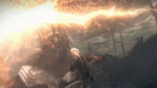
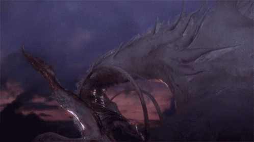
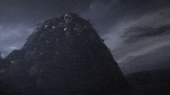
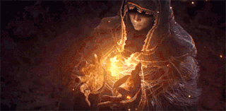

Dark Souls II
Dark Souls II é um jogo do género RPG de ação produzido pela empresa japonesa FromSoftware e o terceiro da série Souls. Depois de alguns adiamentos, foi lançado pela Bandai Namco Games entre março e abril de 2014 para Microsoft Windows, PlayStation 3 e Xbox 360.

Historia
Bom, esta é uma introdução de Dark Souls 1 é essencial para compreender o ciclo em que o fogo transcendeu no Dark Souls 2, precedendo o que condiz a maldição do Undead (Morto-Vivo).
Antes do fogo, o mundo era habitado por apenas dois planos, o plano superior presenciava uma habitação totalmente cinzenta, composta por enormes árvores gigantes e dragões imortais habitando este plano, não havia vida ou morte, luz ou trevas, etc... assim como abaixo, criaturas sem significação existiam, mas tudo estava por terminar, o que iria dar o surgimento da era dos gigantes. Após o surgimento da primeira chama, sabemos bem o que aconteceu, da chama vieram os quatro grandes Lords, suas almas sustentaram suas significações.
Os quatro grandes Lords
Gwyn(O senhor da luz solar)
Na luta contra os dragões, perdeu muitos guerreiros, porém com a traição de Seath the Scaleless(sem escamas) se saiu vitorioso.
Seath(O sem Escamas)
Invejoso pela imortalidade de seus irmãos, renegou sua raça e revelou o ponto fraco dos seus irmãos, então o senhor da luz lanço de relâmpagos para atacá-los (o ponto fraco dos dragões é a eletricidade) destruindo as escamas de pedra dos dragões e revelando a fraqueza em sua carne.
Nito (o primeiro dos mortos)
responsável pela degradação da vida dos dragões na batalha, maculando o mundo com sua chuva de pragas e miasmo, Nito adoeceu as bestas do Fogo.
Bruxa de Izalith(A senhora da chama e da vida)
Destruiu junto com suas filhas as casas dos dragões (Arch Tree) com fortes poderes pyromance.
Dentro e preso em uma estrada sem retorno, o chosen undead se encontra na tênue entre o que profundará a vida ou a morte, a luz ou a escuridão. Quando surgiu a primeira chama ela permitiu que a luz viesse a tona, logo as trevas também presencia a existência, como se um necessita-se do outro, compreensivelmente elementar. Durante a hegemonia dos lords primordiais, quatro reis governaram um reino chamado New Londo, porém, foram seduzidos pelo poder do dreno de vida apresentados pelas forças do abismo (Kaathe, uma das serpentes primordiais), então vieram os darkwraiths, em suma, para não focar no primeiro game, New Londo foi destruída, para conter o mal que havia surgido, pessoas boas e pessoas más foram todas sentenciadas a morte pela inundação da cidade trancada para conter um dos piores erros e traições que haveria acontecido. Estes são acontecimentos de muito tempo atrás, os nomes destes reis foram esquecidos, no entanto a história se repete dentro de um ciclo, e mais 4 reis perderam seus reinos para o abismo, um destes reis foi o rei do grandioso reino chamado Drangleic, seu nome era Vendrick.
O Corvo e Égide Do Rei
"Prospero, Grandioso, Belo, Magnífico"...estas qualidades se davam as terras do reino denominado Drangleic, guiado por um poderoso e hábil Rei denominado como Vendrick.
O Rei Vendrick seria o atual senhor da luz, o rei constituiu sua força em seu reino ao cerca-se de aliados com quem poderia contar, favorecendo guerreiros que batalhavam como sua forma de sobrevivência e caminho para um bem maior. Assim como seu irmão Aldia, Vendrick também se apegou com o conhecimento, sendo obviamente um adepto da magnitude do que é possível se compreender pelo mundo e sobre o mundo, valorizando a sabedoria acima de tudo.
"Meu lorde fez descobertas magnificas em Almas... Uma recompensa pelos tempos. Ele derrotou os quatro grandiosos e construiu este reino com suas almas"
"Nascemos para governar"
Vendrick era um grande rei, logo, Drangleic sob seu domínio prosperaria, então, Vendrick mandou seus homens para as ruínas de um reino antigo, Brume Tower, pensando reivindicar estas terras repletas de ferro.

Porém, um dos fatores que importam é o fator de que um dos fragmentos de Manus (o pai do abismo) tomou forma, se tornando a cria da vontade, buscando o poder necessário para tomar sua forma e o poder para reivindicar as trevas herdeiras de seu sangue... Nashandra se direcionava para Drangleic. A mulher avisou de uma possível ameaça a Drangleic, chegando ao reino de uma terra desconhecida, a mulher seduziu Vendrick, induziu-o a premeditar um ataque aos gigantes, assim destruindo qualquer empecilho para suas terras. Sabendo o quanto o reino de Drangleic significava para Vendrick, não é difícil imaginar que fora obviamente uma afronta para ele, perder seu reino seria como perder sua alma, e isto ele não permitiria. O Rei viajou com a rainha ao seu lado, junto de seus subordinados e aliados, ao fim deste confronto, Vendrick foi induzido a pegar um artefato, roubando-o dos gigantes e levando-o para seu reino. Petrified Egg (Ovo petrificado), este artefato tinha o poder de conceder vida a Golens, com este, Vendrick construiu um grandioso castelo, e como satisfação, Nashandra foi denominada rainha... o reino prosperou, o nome da rainha era conhecido por todo o povo, e todos saldavam a paz que ela trouxa, no entanto ao passar do tempo, a paz que Nashandra havia proporcionado era tão grande que mais parecia escuridão.
The Royal Aegis & The Raven
O rei possuía dois grandes guerreiros acima de todos os outros para servi-lo, Raime era considerado o braço esquerdo do rei, o guerreiro via Vendrick como uma legitima figura paterna, leal ao seu rei e a seu reino, em seu escudo era estampada um grande corvo, que viria simbolizar a morte, ave favorita do guerreiro, também o único vestígio que sobrara dele no reino,O braço direito do rei era Velstadt, um homem poderoso, conhecido por seus milagres, um clérigo que servia Vendrick se baseando em sua enorme fé pela monarquia, seguiria seu rei ao abismo se fosse necessário.

Velstadt vem de uma terra distante, rastreando a Lore, encontramos vestígios de Velstadt em Shulva Sanctum City (Cidade do santuário), em ruínas, o reino afundado encontrou-se também com um dos fragmentos de Manus, Elana a rainha esquálida, que invoca a imagem do servo leal do rei, uma réplica de Velstadt. Se Velstadt de fato peregrinou de Shulva, então, ele poderia ter conseguido perceber a situação se repetindo em Drangleic, afinal, Nashandra assim como Elana, era uma cria do abismo. Ambos os irmãos eram diferentes, Raime era o contraposto de Velstadt. assim como a luz e a escuridão, Velstadt era eternamente leal a coroa, o que o cegou da realidade. Raime também era leal, porém, lealdade ao reino e ao rei são dois patamares diferentes, logo, apenas um conseguiu compreender a realidade dos fatos, enquanto outro estava cego pela fé. Declarado como traidor, por questionar a coroa e lutar pelo seu reino, mas contra o rei e a rainha, Raime foi sentenciado. Velstadt totalmente movido por sua fé em seu rei e rainha não hesitou, os braços direito e esquerdo do rei se cruzaram em uma feroz batalha.
A declaração de traição do único capaz de parar a rainha extinguiu com as esperanças de salvação, não havia alternativas, nada que pudesse impedir a querida "Shandra" do rei de tomar o controle total sobre a situação o que vinha procurando desde seu surgimento, a mulher havia eliminado qualquer ameaça ao seu reino e seu rei cego pelo amor, estando totalmente posicionada para tomar o trono. A falha do Rei e de Velstadt foram as mesmas, seu amor e sua fé irracional. Ambos os reis de Velstadt foram manipulados por filhas da escuridão, ele deveria ter reconhecido o padrão semelhante em seu antigo reino e rei, porém, novamente sua confiança inefável em seus lordes o deixou cego a realidade, uma fé absoluta. Raime e Velstadt batalharam entre si, ambos eram leais aos seus objetivos, ambos possuíam força, ambos queriam o bem maior para seus respectivos pontos, mas Velstadt prevaleceu. Ao contrário do que pode-se imaginar, Raime não foi condenado a morte, fora exilado. Raime descobriu que sem força necessária, o fato de estar certo não é o único pilar para se apoiar, como Velstadt havia vindo de um reino que apenas restara uma rainha, então Raime viajou para reinos onde não houvera rainha alguma governado, talvez para descobrir o passado dos reinos para entender como Drangleic poderia se situar, Raime chegou a Brume Tower. A névoa negra que se encontrava neste lugar repelia qualquer um que ousa-se adentrar, no entanto, Raime foi capaz de rastrear o que era o amedrontador, possivelmente para comprovar ao Rei Vendrick o perigo que estava ao seu lado, o que ele encontrou lá o abalou, Nadalia a rainha das cinzas. Dentro de destroços e escombros de um reino devastado pela ganância de um rei que um dia fora conhecido como o Rei de ferro. Sem qualquer alternativa, Nadalia fez de Brume Tower seu lar. A cria do abismo chegou atrasada no reino em que deveria ter reinado ao lado de seu rei, porém, o tolo já havia sucumbido e seu reinado havia acabado com sua ambição.
A intenção inicial de Raime, possivelmente era de destruir Nadalia e voltar para seu reino natal com provas suficientes, todavia, em algum momento ao se aprofundar em sua busca pelos fragmentos de alma de Nadalia, algo o transformou. Nadalia não tinha um rei ou um reino, igualmente a Raime, a semelhança dos dois manteve-os em uma união, Raime então possuíra uma greatsword imbuída com um tipo de miasmo. Renascido como um novo guerreiro, servindo a uma mãe que o acolheu depois de ser largado por um pai ingrato e cego por seu amor, agora o guerreiro da ave negra protege os restos de Nadalia. Enquanto seu antigo irmão Velstadt protege seu rei Vendrick dentro da cripta pela eternidade, até que alguém apareça procurando respostas...
Desenvolvimento
Dark Souls II foi anunciado durante os Spike Video Game Awards em dezembro de 2012. Hidetaka Miyazaki, que foi director dos dois jogos anteriores da série,Demon's Souls e Dark Souls, serviu como supervisor, enquanto que a direcção ficou a cargo de Tomohiro Shibuya e Yui Tanimura.O game se passa dentro do mundo fictício de Drangleic, existindo menções e complementos ao enredo do game anterior. O jogo usa servidores dedicados para o multijogador, e usa dois modos: jogador vs. ambiente (PvE) e jogador vs. jogador (PvP), para além de ter componentes cooperativos. Tal como em jogos anteriores da série, Dark Souls II tem uma jogabilidade desafiadora, mas com gráficos mais poderosos e um sistema de inteligência artificial mais avançado
Recepção
De acordo com o site de análises agregadas Metacritic, Dark Souls II recebeu “aclamação universal” por parte da critica especializada, conseguindo a pontuação de 91/100 em todas as versões. Mas perante os jogadores, Dark Souls II não chega a ser o melhor titulo da franquia
Expansões
Posteriormente, uma nova versão do jogo com conteúdo DLC, Dark Souls II: Scholar of the First Sin, foi lançada em abril de 2015. O título é uma compilação do jogo original e de todo o conteúdo adicional lançado, para além de englobar uma versão para PlayStation 4, Xbox One e Windows com gráficos melhorados, melhor capacidade do multijogador online entre outras melhorias